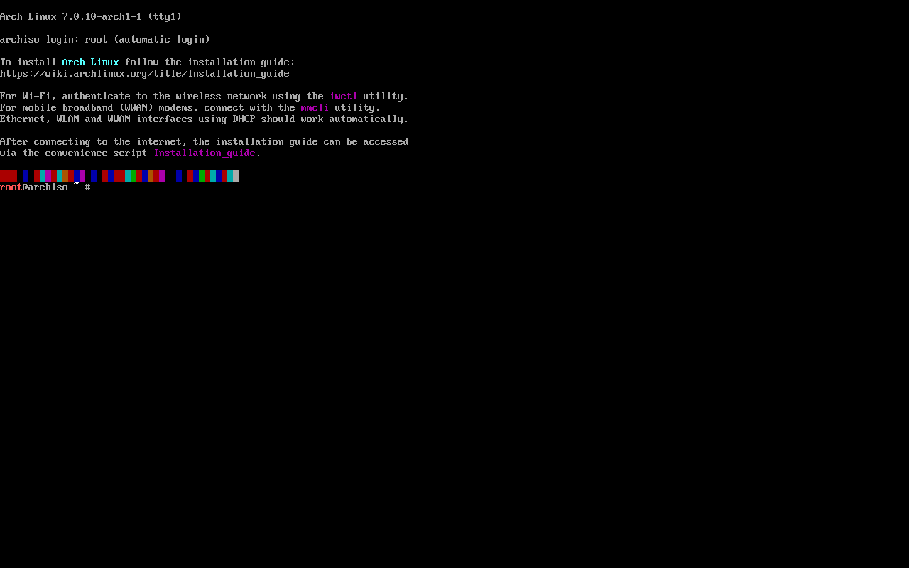

Arch: o ambiente live
Quando o computador inicia pelo pendrive do Arch, você não cai num instalador com botões: cai num terminal, já logado como administrador. Esse sistema temporário é o ambiente live. É dele que você vai preparar o disco e instalar o Arch. Nesta aula você aprende a se orientar nele e a deixar quatro coisas prontas antes de mexer no disco: teclado, modo de boot, internet e relógio.
- O que é o ambiente live e o que cada linha da tela inicial quer dizer.
- Trocar o teclado para ABNT2 (
loadkeys br-abnt2) e aumentar a fonte. - Confirmar que iniciou em modo UEFI (
fw_platform_size). - Ver as placas de rede (
ip link), o resumo do Wi-Fi comiwctle testar a internet comping(o passo a passo completo fica em Internet no Live). - Conferir o relógio (
timedatectl) e, se quiser, instalar de outro computador por SSH.
Diferente do sistema que você vai instalar (que estará em português), o ambiente live mostra tudo em inglês. Nesta aula, cada saída real aparece em inglês, como você vai vê-la, e é traduzida e explicada logo abaixo. As saídas vêm da instalação real da VM do guia (ISO de 1º de junho de 2026); o que não deu para rodar na VM está marcado como ilustrativo.
Iniciar pelo pendrive
Escolha o pendrive no menu de boot do computador (F12, F11, F8… veja Baixar e Verificar a ISO) ou, na VM, só ligue a máquina com a ISO na unidade óptica. Aparece primeiro um pequeno menu da ISO; a primeira opção, Arch Linux install medium (x86_64, UEFI), inicia sozinha em alguns segundos. Depois de uma rolagem de mensagens do kernel, você chega a esta tela:

Linha por linha:
| Na tela | Tradução | O que quer dizer |
|---|---|---|
Arch Linux 7.0.10-arch1-1 (tty1) | — | O nome do sistema, a versão do kernel que veio na ISO e o terminal em que você está (tty1, o primeiro console de texto). O sistema instalado terá um kernel mais novo, baixado na hora. |
archiso login: root (automatic login) | login em archiso: root (login automático) | archiso é o nome da máquina no live. Você já entrou como root, o administrador, sem senha. |
To install Arch Linux follow the installation guide: https://wiki.archlinux.org/title/Installation_guide | Para instalar o Arch Linux, siga o guia de instalação: … | O roteiro oficial, que este guia acompanha passo a passo. |
For Wi-Fi, authenticate to the wireless network using the iwctl utility. | Para Wi-Fi, autentique-se na rede sem fio com o utilitário iwctl. | Veja o resumo abaixo e o passo a passo em Internet no Live. |
For mobile broadband (WWAN) modems, connect with the mmcli utility. | Para modems de banda larga móvel (WWAN), conecte com o mmcli. | Para notebooks com chip 4G/5G. Raro (veja Internet no Live). |
Ethernet, WLAN and WWAN interfaces using DHCP should work automatically. | Interfaces cabeadas, sem fio e móveis com DHCP devem funcionar sozinhas. | Com cabo, a internet já deve estar funcionando. (DHCP é o serviço do roteador que entrega um endereço para a máquina.) |
After connecting to the internet, the installation guide can be accessed via the convenience script Installation_guide. | Depois de conectar, o guia de instalação pode ser lido pelo script Installation_guide. | Digitar Installation_guide abre a página da Wiki num navegador de texto, no próprio terminal. |
| a faixa de blocos coloridos | — | Só decoração: mostra as cores que o console consegue exibir. |
root@archiso ~ # | — | O prompt: usuário root, máquina archiso, pasta atual ~ (a pasta pessoal do root) e #, o símbolo de administrador. |
O que é, afinal, o ambiente live
- É um Arch completo e mínimo que roda da memória RAM, lido do pendrive. Ele não toca no seu disco até você mandar.
- Nada fica salvo: tudo o que você mudar nele (teclado, senha, arquivos) some ao desligar. O que importa é o que você gravar no disco durante a instalação.
- O shell é o zsh (não o Bash), com completação por Tab bem esperta:
loadkeys br-Tablista os teclados. Os comandos desta aula funcionam igual nos dois. - Você é root o tempo todo: não existe
sudoaqui, e nada pede confirmação. Atenção redobrada a partir da aula de partições. - Há seis consoles de texto: Alt+F2 abre outro, já logado (útil para ler a Wiki num enquanto instala no outro); Alt+F1 volta.
Você vai ver isso no lsblk da próxima aula: o sistema do live é um arquivo compactado montado em /run/archiso/airootfs, e o pendrive (na VM, o "CD" sr0) fica em /run/archiso/bootmnt.
Teclado: loadkeys br-abnt2
O live começa com o teclado americano (US). Num teclado brasileiro ABNT2, várias teclas saem trocadas: o ç não existe, / e ? mudam de lugar, os acentos não funcionam. Antes de digitar qualquer coisa importante, troque o mapa de teclas:
- loadkeys
- (load keys, "carregar teclas") Troca o mapa de teclado do console de texto.
- br-abnt2
- O mapa brasileiro ABNT2 (o teclado com Ç, o mais comum no Brasil).
#> loadkeys br-abnt2 #> echo $? 0
Não aparece nada: no Linux, silêncio costuma querer dizer sucesso, e o código de saída 0 confirma. Teste digitando ç e /. (O hífen de br-abnt2 fica no mesmo lugar nos dois teclados, à direita do 0, então dá para digitar o comando mesmo com o mapa americano.)
Outros mapas brasileiros e o do teclado americano com acentos (comum em notebooks importados). A lista é do pacote kbd, o mesmo no live e no sistema instalado (conferida na VM):
$ localectl list-keymaps | grep -i '^br' br-abnt br-abnt2 br-latin1-abnt2 br-latin1-us $ localectl list-keymaps | grep -i acentos us-acentos
| Seu teclado | Comando |
|---|---|
| Brasileiro ABNT2 (tem Ç) | loadkeys br-abnt2 |
| Americano, mas você quer acentos (US internacional) | loadkeys us-acentos |
| Americano, sem acentos | não precisa fazer nada (é o padrão) |
Essa troca vale só para o live. Para o sistema instalado, o teclado é gravado em /etc/vconsole.conf na aula Configurar o Sistema.
Letras pequenas demais? setfont
Em telas de alta resolução (notebooks com tela 2K/4K), as letras do console ficam minúsculas. O live traz a fonte Terminus em vários tamanhos; a maior é a de 32 pixels de altura:
#> setfont ter-132b
- setfont
- Troca a fonte do console de texto.
- ter-132b
- Terminus (
ter), conjunto de caracteres 1 (Europa ocidental, com acentos),32pixels de altura,bde bold (negrito). Há tambémter-124b,ter-128b…
Esse comando é ilustrativo neste guia: a VM tem resolução baixa e não precisou dele. Para ver todas as fontes: ls /usr/share/kbd/consolefonts/. setfont sozinho volta à fonte padrão.
Confirmar o modo de boot: UEFI
O guia instala em modo UEFI (veja BIOS, UEFI e Secure Boot). Se o pendrive tiver iniciado em modo BIOS antigo, a partição EFI e o GRUB das próximas aulas não vão funcionar. Por isso, confira antes:
- cat
- Mostra o conteúdo de um arquivo.
- /sys/firmware/efi/fw_platform_size
- Um "arquivo" que o kernel cria em
/syssó quando o computador iniciou em UEFI. Ele contém o tamanho da plataforma do firmware.
#> cat /sys/firmware/efi/fw_platform_size 64
| Resultado | O que quer dizer | O que fazer |
|---|---|---|
64 | UEFI de 64 bits (o normal; o da VM do guia) | siga em frente |
32 | UEFI de 32 bits (alguns tablets e notebooks baratos antigos) | dá para instalar, mas só com GRUB (veja Bootloader) |
cat: /sys/firmware/efi/fw_platform_size: No such file or directory ("arquivo ou diretório inexistente") | iniciou em modo BIOS (Legacy/CSM) | reinicie, desligue o CSM/Legacy no firmware e escolha a entrada "UEFI" do pendrive; na VM, ligue "Habilitar EFI" |
Internet
A ISO não traz os pacotes do sistema: eles são baixados durante a instalação. Sem internet, não há instalação. Aqui vai o essencial; Wi-Fi, celular por USB e modem têm uma aula só para eles: Internet no Live.
Ver as placas de rede: ip link
- ip
- A ferramenta de rede do Linux (do pacote
iproute2). - link
- Mostra as placas de rede ("interfaces") e o estado de cada uma, sem os endereços.
#> ip link
1: lo: <LOOPBACK,UP,LOWER_UP> mtu 65536 qdisc noqueue state UNKNOWN mode DEFAULT group default qlen 1000
link/loopback 00:00:00:00:00:00 brd 00:00:00:00:00:00
2: enp0s3: <BROADCAST,MULTICAST,UP,LOWER_UP> mtu 1500 qdisc fq_codel state UP mode DEFAULT group default qlen 1000 « a placa com cabo
link/ether 08:00:27:74:b2:03 brd ff:ff:ff:ff:ff:ff
altname enx08002774b203
| Parte | O que quer dizer |
|---|---|
1: lo | A interface loopback: uma rede "de mentira" da máquina com ela mesma. Sempre existe; ignore. |
2: enp0s3 | A placa de rede com cabo. O nome segue uma regra: en = Ethernet (cabo), p0 = barramento PCI 0, s3 = encaixe (slot) 3. Uma placa Wi-Fi começa com wl (por exemplo wlan0 ou wlp2s0); um modem 4G, com ww. |
<…UP,LOWER_UP> | UP: a placa está ligada. LOWER_UP: há sinal no cabo. Sem LOWER_UP, o cabo está solto ou o outro lado está desligado. |
state UP | Pronta para usar. |
link/ether 08:00:27:74:b2:03 | O endereço físico (MAC) da placa. 08:00:27 é o começo dos MACs do VirtualBox. |
altname enx08002774b203 | Um nome alternativo para a mesma placa, montado a partir do MAC. |
Com cabo, é só isso: o live pede um endereço ao roteador sozinho (DHCP). Pule para testar com ping. Sem cabo, mas com um celular? Ligue a "ancoragem USB" dele: também funciona sozinho (veja celular por USB).
Wi-Fi com iwctl (resumo)
Sem cabo, o live não entra no Wi-Fi sozinho: você escolhe a rede e digita a senha com o iwctl, o programa que conversa com o iwd (o serviço de Wi-Fi do live). Em resumo:
iwctl— entra no programa; o prompt vira[iwd]#.device listestation wlan0 scan— veja o nome da placa (wlan0) e mande procurar redes.station wlan0 get-networksestation wlan0 connect NomeDaRede— escolha a rede e digite a senha (cada letra vira um*).station wlan0 show— tem de dizerState connected; saia comexite teste comping.

iwctl no live do laboratório: a placa wlan0 e as redes encontradas.Cada passo explicado com as telas reais (a senha certa, a senha errada, o show linha por linha), o Wi-Fi bloqueado pelo modo avião, o adaptador USB que não aparece, a internet do celular pelo cabo USB e o modem 4G estão na próxima aula: Internet no Live (Wi-Fi, cabo, celular). Lembre que o iwctl só existe no live: no sistema instalado, o Wi-Fi fica por conta do NetworkManager (veja Primeiro Boot e Rede).
Testar a conexão: ping
- ping
- Manda pacotes de teste para um endereço e mede quanto tempo a resposta leva.
- -c 3
- (count) Manda só 3 pacotes e para. Sem o
-c, opingnão para nunca: interrompa com Ctrl+C. - archlinux.org
- Um endereço que sempre existe. Testar um nome (e não um número) confere também o DNS.
#> ping -c 3 archlinux.org PING archlinux.org (209.126.35.79) 56(84) bytes of data. 64 bytes from 209.126.35.79: icmp_seq=1 ttl=64 time=44.0 ms 64 bytes from 209.126.35.79: icmp_seq=2 ttl=64 time=42.5 ms 64 bytes from 209.126.35.79: icmp_seq=3 ttl=64 time=55.2 ms --- archlinux.org ping statistics --- 3 packets transmitted, 3 received, 0% packet loss, time 5616ms « 0% perdidos: internet ok rtt min/avg/max/mdev = 42.522/47.247/55.200/5.656 ms #> echo $? 0
| Linha | O que quer dizer |
|---|---|
PING archlinux.org (209.126.35.79) | O nome virou um número (IP): o DNS funciona. |
64 bytes from … icmp_seq=1 ttl=64 time=44.0 ms | Uma resposta chegou: pacote número 1, em 44 milissegundos. |
3 packets transmitted, 3 received, 0% packet loss | 3 enviados, 3 recebidos, nenhum perdido. A internet funciona. |
rtt min/avg/max/mdev | O tempo de ida e volta (round-trip time): mínimo, médio, máximo e variação. |
Missão: o simulador é a máquina já instalada, não o live, mas o comando é o mesmo. Descubra o nome da placa de rede com cabo da ana (com ip link ou ip a).
O relógio: timedatectl
Parece detalhe, mas um relógio errado quebra a instalação: os sites seguros (HTTPS) e as assinaturas dos pacotes têm data de validade, e um computador "no ano errado" acha que tudo está vencido ou ainda não vale. O live acerta o relógio sozinho pela internet (NTP); só confira:
#> timedatectl
Local time: Fri 2026-10-16 15:01:23 UTC
Universal time: Fri 2026-10-16 15:01:23 UTC
RTC time: Fri 2026-10-16 15:01:23
Time zone: UTC (UTC, +0000)
System clock synchronized: yes « sincronizado pela internet
NTP service: active
RTC in local TZ: no
| Linha | Tradução | O que quer dizer |
|---|---|---|
Local time | hora local | A hora no fuso configurado. No live o fuso é UTC, por isso fica 3 horas à frente de Brasília (15:01 UTC = 12:01 em São Paulo). |
Universal time | hora universal | A hora em UTC, a referência mundial. |
RTC time | hora do RTC | A hora do relógio da placa-mãe (Real-Time Clock), que funciona com a bateria mesmo desligado. |
Time zone: UTC (UTC, +0000) | fuso horário | O fuso do live. O de São Paulo é configurado no sistema instalado (Configurar o Sistema). |
System clock synchronized: yes | relógio sincronizado: sim | O que importa: o relógio foi acertado pela internet. |
NTP service: active | serviço NTP: ativo | O serviço que acerta o relógio (Network Time Protocol) está rodando. |
RTC in local TZ: no | RTC no fuso local: não | O relógio da placa guarda UTC, o padrão do Linux. (O Windows guarda a hora local; em dual boot isso dá diferença de horas.) |
Se aparecer System clock synchronized: no logo depois do boot, espere alguns segundos (e confira a internet) e rode de novo.
Missão: veja o relógio da máquina da ana com o timedatectl. Compare com o do live: qual é o fuso horário dela?
Opcional: instalar de outro computador (SSH)
Digitar comandos longos no console do live, sem copiar e colar, é chato. Se você tem outro computador na mesma rede, dá para controlar o live de lá por SSH (Secure Shell, acesso remoto ao terminal) e colar os comandos deste guia. Foi assim que a instalação do guia foi feita. Os passos abaixo são ilustrativos (a sessão de SSH não foi gravada nos logs), mas as mensagens são as do Arch.
- No live, crie uma senha para o root. Ela só vale até desligar:
#> passwd New password: Retype new password: passwd: password updated successfully
(Digite a senha duas vezes; nada aparece enquanto você digita.) - Garanta que o servidor SSH está rodando. Na ISO oficial ele já costuma iniciar sozinho; rodar de novo não faz mal:
#> systemctl start sshd
- Descubra o endereço IP do live com
ip -brief addr(procure algo como192.168.0.15/24na linha da placa). - No outro computador, conecte:
$ ssh root@192.168.0.15
Na primeira vez, o SSH mostra a impressão digital da máquina e perguntaAre you sure you want to continue connecting (yes/no/[fingerprint])?: respondayes. Depois, a senha que você criou. O prompt passa a serroot@archiso ~ #, agora numa janela onde dá para colar.
Na VM do guia, a rede é NAT, então o outro computador é o próprio hospedeiro, pela porta encaminhada (veja a tabela da VM): ssh -p 2223 root@127.0.0.1.
Com a senha definida, qualquer um na mesma rede pode tentar entrar no live como root. Em casa, tudo bem. Numa rede pública (faculdade, café), use uma senha forte ou não use SSH. Ao reiniciar, a senha some. Mais sobre SSH em SSH.
Quando não funciona
#> loadkeys br-abnt3 loadkeys: Unable to open file: br-abnt3: No such file or directory #> echo $? 1
O que aconteceu: o nome do mapa está errado ("não foi possível abrir o arquivo … arquivo ou diretório inexistente"). (Saída real, conferida na VM com o live em inglês.)
Como resolver: use localectl list-keymaps | grep br ou o Tab do zsh (loadkeys br-Tab) para ver os nomes certos.
O que aconteceu: o seu teclado não é ABNT2. Notebooks importados costumam ter teclado americano (sem Ç, com a tecla ' ao lado do Enter).
Como resolver: loadkeys us-acentos, ou volte ao padrão com loadkeys us.
ping diz "Temporary failure in name resolution"
O que aconteceu: o live não está conectado ou não recebeu o endereço do DNS ("falha temporária na resolução de nomes"). Mensagem ilustrativa: a rede da VM funcionou de primeira.
Como confirmar: ip link mostra a placa com LOWER_UP? ip -brief addr mostra um endereço IP na placa? Se a placa não tiver IP, o DHCP não funcionou: confira o cabo, o roteador ou a conexão Wi-Fi.
Como resolver: reconecte o cabo (ou refaça o station wlan0 connect), espere alguns segundos e teste de novo. Outros casos em Internet no Live.
iwctl não mostra nenhuma placa, ou ela não liga
O que aconteceu: a placa Wi-Fi está bloqueada (pela tecla de "modo avião" do notebook, por exemplo) ou o live não tem o driver dela.
Como confirmar e resolver: rfkill list mostra Soft blocked: yes ou Hard blocked: yes? O bloqueio por software sai com rfkill unblock wifi; o por hardware, só com a tecla ou chave do notebook. Se a placa nem aparece em ip link, use um cabo (ou o celular conectado por USB, com "ancoragem USB"), que funciona como placa com cabo. Passo a passo em O Wi-Fi não aparece.
O que aconteceu: algumas placas de vídeo (principalmente NVIDIA) não se dão bem com o modo gráfico do kernel no live.
Como resolver: no menu da ISO, com a primeira opção selecionada, aperte e (ou Tab, conforme o menu), acrescente nomodeset ao fim da linha e aperte Enter. A tela fica com resolução baixa, mas funciona.
Referência
| Comando (no live) | Para quê |
|---|---|
loadkeys br-abnt2 | Teclado brasileiro ABNT2 (só no live) |
setfont ter-132b | Fonte grande, para telas de alta resolução |
cat /sys/firmware/efi/fw_platform_size | 64 = UEFI; arquivo inexistente = BIOS |
ip link / ip -brief addr | Placas de rede e estado / endereços IP |
iwctl → device list, station wlan0 scan, get-networks, connect REDE | Conectar ao Wi-Fi |
ping -c 3 archlinux.org | Testar a internet e o DNS |
timedatectl | Conferir o relógio (synchronized: yes) |
passwd + systemctl start sshd | Permitir acesso por SSH ao live |
Installation_guide | Abre o guia de instalação da Wiki no terminal |
Exercícios
1. Teclado brasileiro
Complete o comando que deixa o teclado do live no padrão ABNT2:
2. Conectar ao Wi-Fi
Dentro do iwctl, a placa é wlan0 e a rede é CasaDaAna. Complete:
3. cat /sys/firmware/efi/fw_platform_size respondeu No such file or directory. O que isso quer dizer?
4. Na saída do ping, qual linha prova que a internet está funcionando?
5. Você trocou o teclado e criou uma senha de root no live, e reiniciou o computador. O que acontece?
Resumo
- O live é um Arch temporário que roda da memória: você já é root, o shell é o zsh e nada fica salvo.
loadkeys br-abnt2acerta o teclado (só no live).cat /sys/firmware/efi/fw_platform_size→64confirma o modo UEFI.- Cabo funciona sozinho; Wi-Fi, com
iwctl(station wlan0 scan / get-networks / connect), em detalhes em Internet no Live. ping -c 3 archlinux.orgtesta a internet;timedatectldeve dizersynchronized: yes.- Opcional:
passwd+systemctl start sshdpara instalar de outro computador.
Sem cabo? A próxima aula, Internet no Live, conecta o Wi-Fi passo a passo. Com teclado, UEFI, internet e relógio prontos, o disco é preparado em Particionar o Disco.
Na Arch Wiki: esta aula cobre as seções 1.4 a 1.8 do Installation guide (em português). Para ir além: o teclado e as fontes do console em Linux console/Keyboard configuration e Linux console — Fonts; o Wi-Fi em iwd (em português); a rede em Network configuration; o relógio em System time (em português); e a instalação por SSH em Install Arch Linux via SSH.